Vòng bi con lăn cầu có rãnh lăn ngoài hình cầu cho khả năng tự lựa tuyệt vời, bù cho độ võng trục và sai số lắp đặt trong khi chịu tải hướng kính nặng và tải dọc trục cả hai chiều. Chúng tôi cung cấp các dòng CA, CC, E, E1, MA và MB ở cấp chính xác P0/P6/P5, với đường kính ngoài tới 600 mm, cho hộp số tuabin gió, máy khai khoáng, máy cán và động cơ lớn.
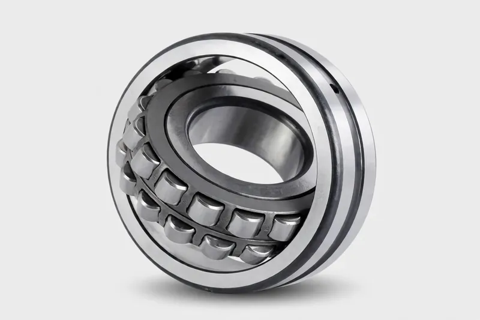
CA Dòng Vòng bi con lăn hình cầu
Vòng bi dòng CA dùng lồng thép dập với con lăn đối xứng, vòng trong cố định…
Tìm hiểu thêm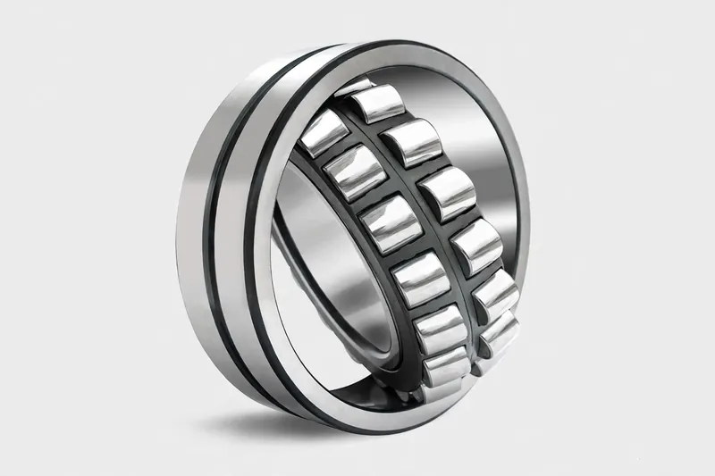
CC Dòng Vòng bi con lăn hình cầu
Vòng bi dòng CC dùng lồng dập và biên dạng con lăn tối ưu để giảm ma sát…
Tìm hiểu thêm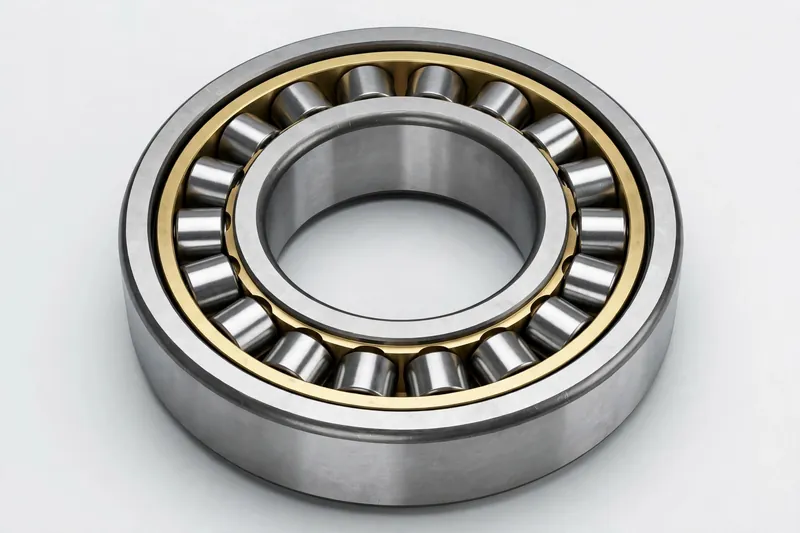
E1 Dòng Vòng bi con lăn hình cầu
E1 là thiết kế cải tiến: kích thước và số lượng con lăn tối ưu nâng rõ rệt tải trọng động định mức…
Tìm hiểu thêm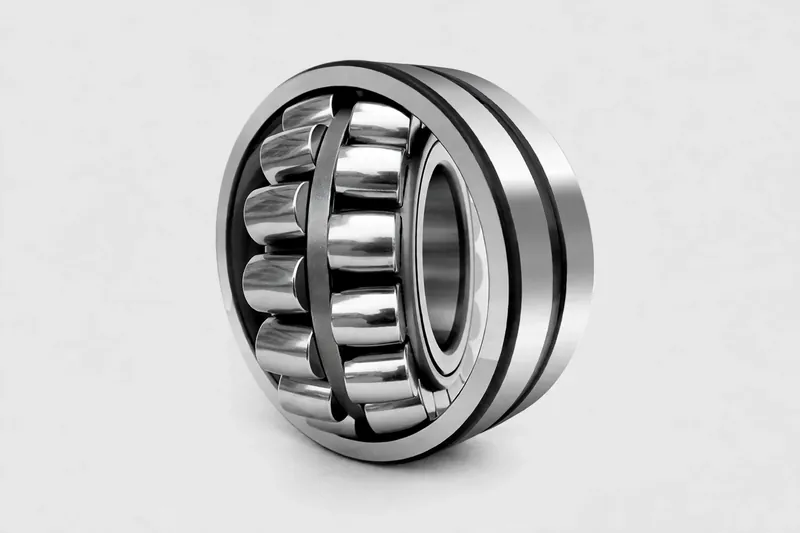
E Dòng Vòng bi con lăn hình cầu
Vòng bi dòng E dùng lồng thép dập gia cường với mật độ con lăn cao…
Tìm hiểu thêmTiếp xúc đường giữa con lăn và rãnh lăn cho khả năng chịu tải hướng kính và độ cứng cao hơn nhiều so với vòng bi bi cùng kích thước, với vành tách rời để lắp đặt dễ dàng. Dải sản phẩm gồm thiết kế một dãy (NU/NJ/NUP), hai dãy (NN/NNU) và bốn dãy; loại hai dãy chính xác đạt cấp P4, và loại bốn dãy là vòng bi cổ trục cán tiêu chuẩn cho máy cán.

một dãy Vòng bi con lăn trụ
Tiếp xúc đường giữa con lăn và rãnh lăn cho tải trọng hướng kính cao và độ cứng vững; các vòng có thể tách rời…
Tìm hiểu thêm
hai dãy Vòng bi con lăn trụ
Vòng bi hai dãy (NN/NNU) kết hợp độ cứng vững cao với tiết diện hướng kính nhỏ…
Tìm hiểu thêm
bốn dãy Vòng bi con lăn trụ
Vòng bi bốn dãy cho tải trọng hướng kính tối đa trong khối nhỏ gọn và dùng cho…
Tìm hiểu thêmVòng bi con lăn côn chịu tải kết hợp hướng kính và dọc trục, với tải truyền dọc theo góc tiếp xúc con lăn cho hiệu suất cao. Loại một dãy được ghép cặp để có khe hở cài đặt sẵn; loại hai và bốn dãy được chỉnh sẵn tại nhà máy để lắp đặt nhanh — moay-ơ bánh xe, trục chính, hộp số và cổ trục cán.
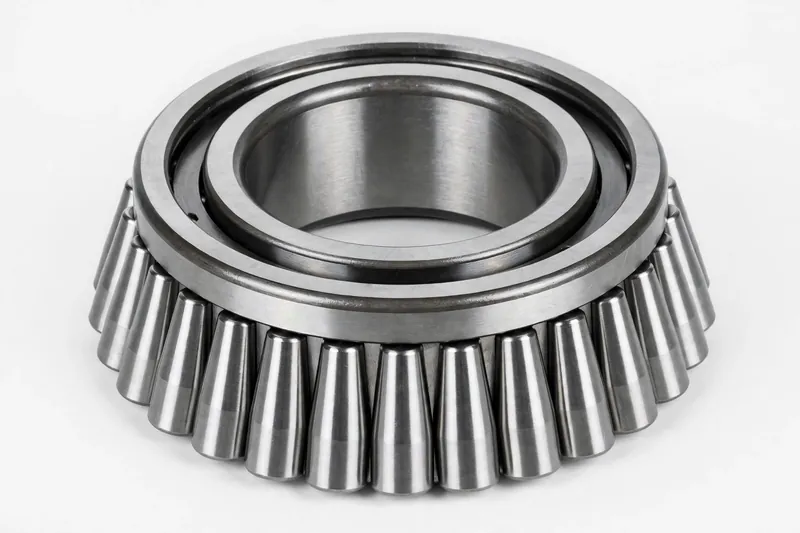
một dãy Vòng bi con lăn côn
Vòng bi một dãy chịu tải hướng kính và tải dọc trục một chiều kết hợp; có thể tách rời…
Tìm hiểu thêm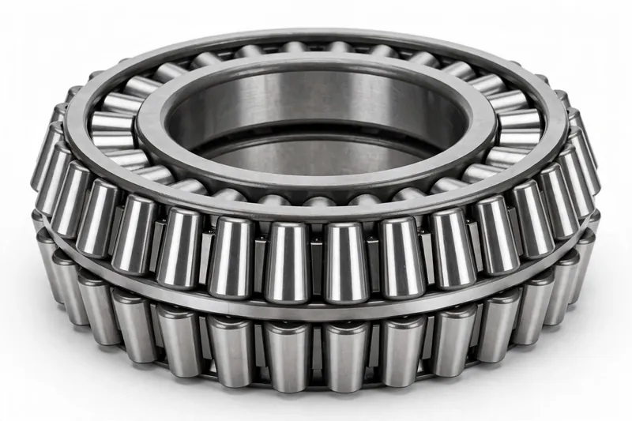
hai dãy Vòng bi con lăn côn
Hai dãy con lăn dùng chung một vòng ngoài để chịu tải dọc trục hai chiều cộng với tải hướng kính nặng…
Tìm hiểu thêm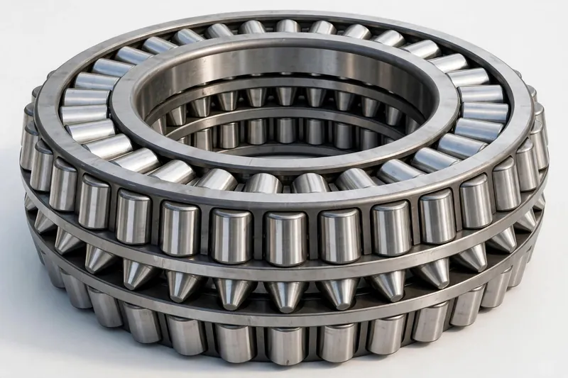
bốn dãy Vòng bi con lăn côn
Vòng bi bốn dãy kết hợp khả năng tải rất cao với khả năng chịu va đập cho máy cán…
Tìm hiểu thêmVòng bi chặn chịu tải dọc trục. Vòng bi chặn con lăn cầu kết hợp khả năng chịu tải dọc trục rất cao với tự lựa cho tuabin nước và động cơ đứng; vòng bi chặn bi nhỏ gọn và tách rời cho tải dọc trục thuần túy ở tốc độ vừa phải — móc cẩu, bơm đứng, phụ kiện máy công cụ.
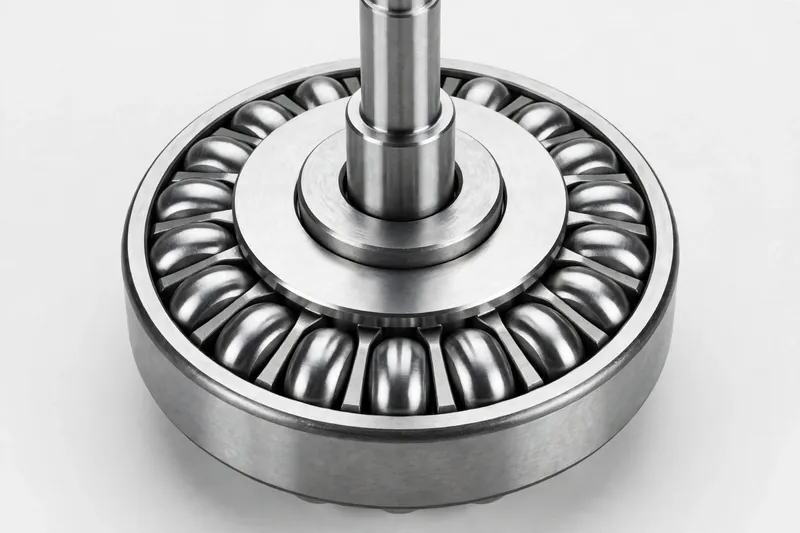
Vòng bi con lăn hình cầu Vòng bi chặn
Vòng bi chặn con lăn hình cầu chịu tải dọc trục rất cao và đồng thời chịu một phần tải hướng kính…
Tìm hiểu thêm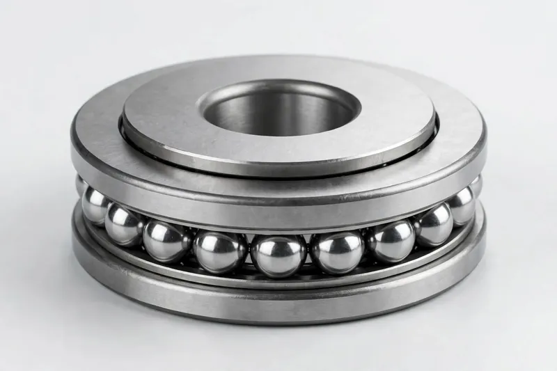
Vòng bi lăn được dùng rộng rãi nhất: đơn giản, ma sát thấp, tốc độ giới hạn rất cao, chịu tải hướng kính và tải dọc trục hai chiều. Dạng hở, có chắn (Z/2Z) và kín (RS/2RS) được nạp mỡ sẵn cho vận hành không cần bảo trì trong động cơ, quạt, bơm và máy móc nói chung.
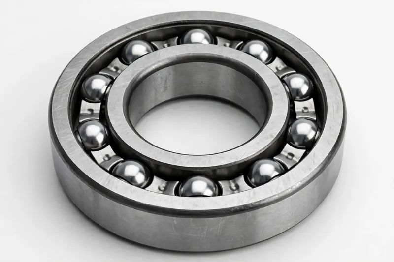
Vòng bi cầu rãnh sâu
Thiết kế đơn giản, ma sát thấp và tốc độ rất cao, vòng bi cầu rãnh sâu chịu…
Tìm hiểu thêm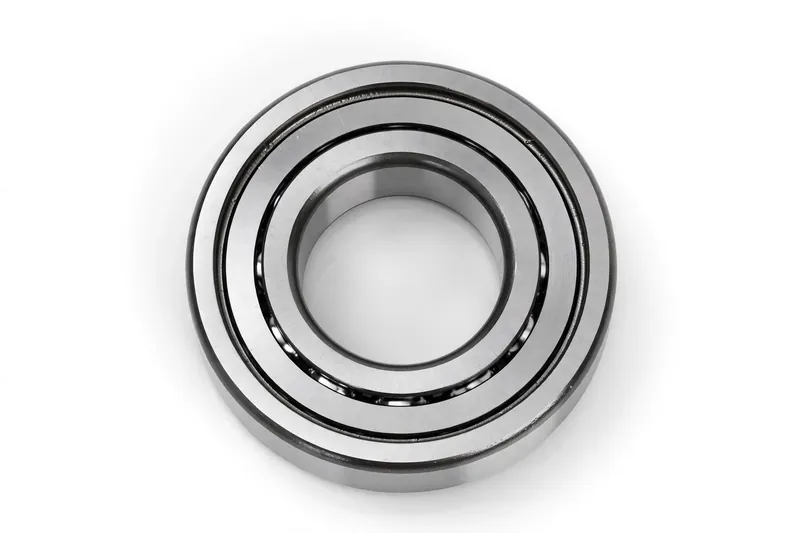
Vòng bi cầu rãnh sâu có tấm chắn
Bản Z/2Z có tấm chắn kim loại ở một hoặc cả hai mặt để ngăn bụi, được bôi trơn trọn đời…
Tìm hiểu thêm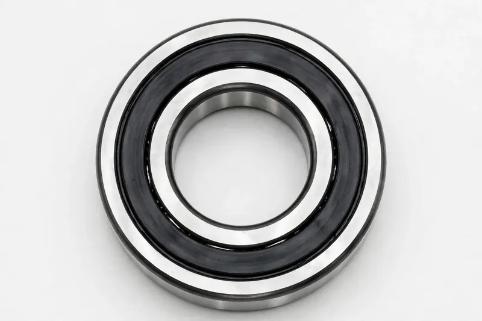
Vòng bi cầu rãnh sâu có phớt
Bản RS/2RS dùng phớt tiếp xúc NBR cho khả năng chống bụi và nước tốt hơn tấm chắn, được nạp…
Tìm hiểu thêmVòng bi bi tiếp xúc góc chịu tải kết hợp hướng kính và dọc trục một chiều với góc tiếp xúc 15°/25°/40°; các cặp mang lại định vị hai chiều và tải trước với đặc tính tốc độ cao tuyệt vời. Thiết kế tiếp xúc bốn điểm chịu lực đẩy hai chiều trong một vòng bi nhỏ gọn — trục chính, máy nén, vành xoay, máy xây dựng.

một dãy Vòng bi cầu tiếp xúc góc
Chịu tải hướng kính và tải dọc trục một chiều kết hợp; góc tiếp xúc lớn hơn làm tăng khả năng tải dọc trục…
Tìm hiểu thêm
tiếp xúc bốn điểm Vòng bi cầu tiếp xúc góc
Rãnh trong hình quả đào cho phép một vòng bi chịu tải dọc trục hai chiều cộng với một phần…
Tìm hiểu thêmTương đương một cặp vòng bi tiếp xúc góc một dãy lắp lưng đối lưng chung một vành ngoài, chúng chịu tải dọc trục hai chiều và mô-men lật với lắp đặt đơn giản và kích thước nhỏ gọn. Dòng 32/33M dùng vòng cách đồng thau đặc; dòng 4200/4300 có dạng hở, có chắn hoặc kín.
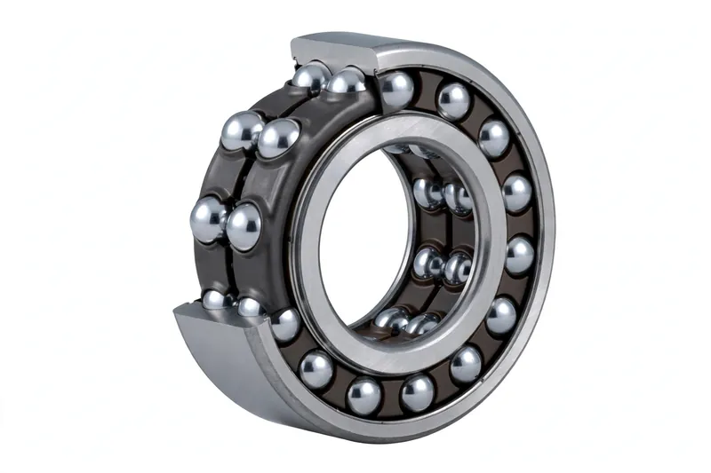
32/33M Dòng hai dãy Vòng bi cầu tiếp xúc góc
Dòng 32/33M dùng lồng đồng thau đặc với các dãy bi đối lưng để chịu tải dọc trục hai chiều…
Tìm hiểu thêm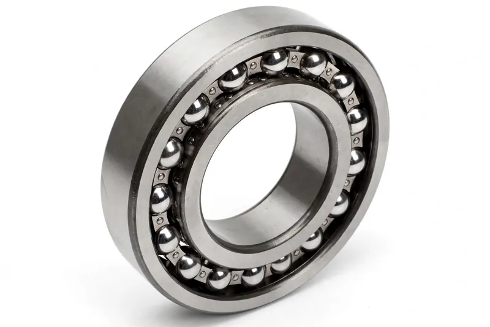
4200/4300 Dòng hai dãy Vòng bi cầu tiếp xúc góc
Tiết diện nhỏ gọn và độ cứng vững tốt; các bản hở, có tấm chắn (Z) và có phớt (RS) phù hợp cho động cơ, hộp số…
Tìm hiểu thêmThe core component of multi-roll cold mill support-roll systems: high OD accuracy, uniform wall thickness and extreme rigidity that directly determine strip thickness precision. Cấpes P4/P2 are available, matched to Sendzimir and 20-high mills, with customisation by mill model.
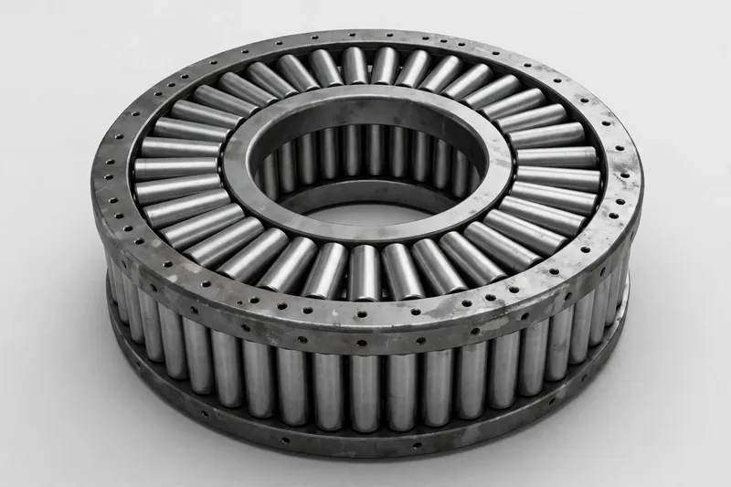
Vòng bi đỡ
Vòng bi đỡ cho máy cán nguội nhiều trục nổi bật với độ chính xác kích thước ngoài cao và tính đồng đều…
Tìm hiểu thêmRãnh lăn ngoài hình cầu cho khả năng căn chỉnh tuyệt vời, bù cho độ võng trục, sai số lắp đặt và lệch trục giữa các vòng bi với ma sát thấp và tốc độ giới hạn cao. Dạng hở và kín phù hợp với trục dài, kém cứng vững trong quạt, máy dệt và máy thực phẩm.
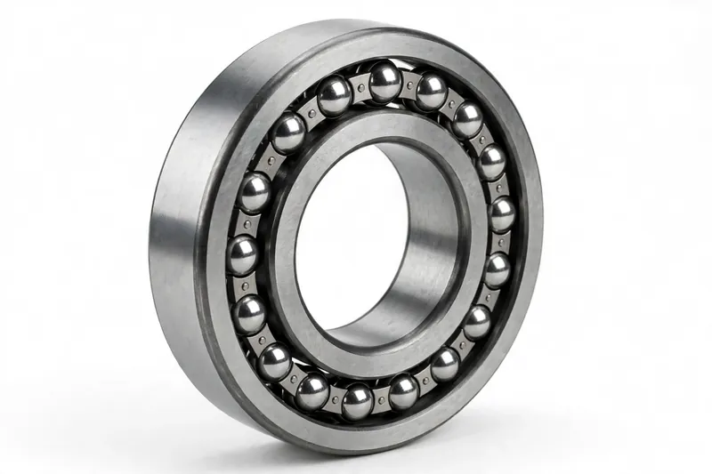
Vòng bi cầu tự lựa
Rãnh ngoài hình cầu cho khả năng tự lựa tuyệt vời, bù độ võng trục và…
Tìm hiểu thêm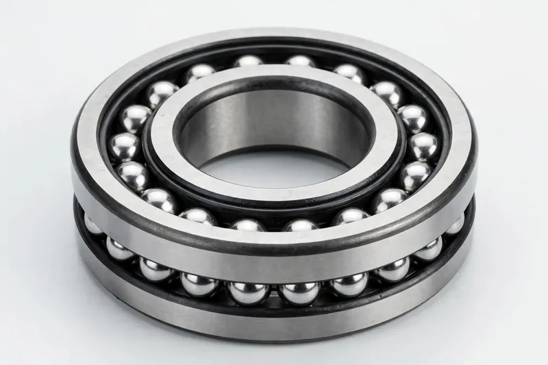
Vòng bi cầu tự lựa, bịt kín hai mặt
Bản bịt kín của vòng bi cầu tự lựa được nạp mỡ sẵn và không cần bảo trì sau…
Tìm hiểu thêmCác loại vòng bi khác
Bốn loại vòng bi nữa được bổ sung vào dải sản phẩm: vòng bi kim và vòng bi bi tuyến tính với bảng model tiêu chuẩn đầy đủ, cùng cụm moay-ơ theo từng xe và vòng bi hộp trục đường sắt cung cấp theo kích thước xe và trục. Tất cả các loại đều có đường kính ngoài tới 600 mm.
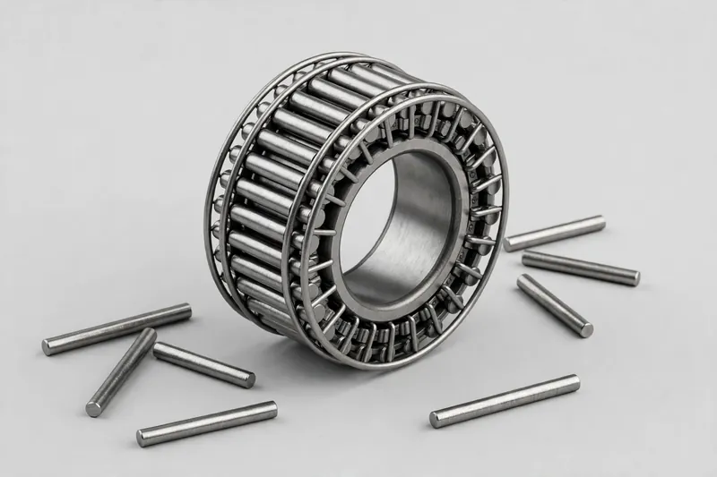
Vòng bi kim
Con lăn trụ mỏng cho tải trọng hướng kính cao trong không gian nhỏ gọn; NK chạy trên rãnh trục, NA49 thêm vòng trong.
Tìm hiểu thêm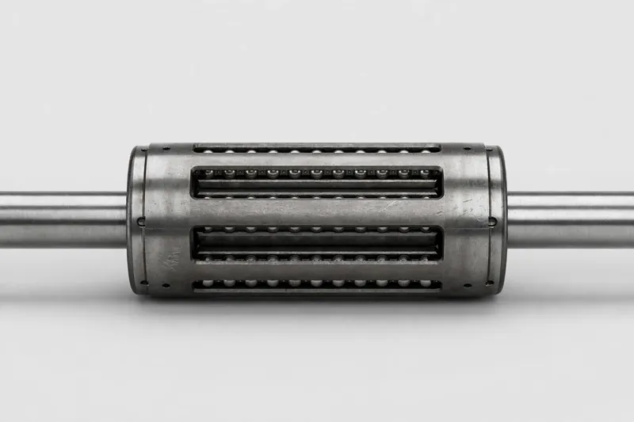
Vòng bi cầu tuyến tính
Các dãy bi tuần hoàn dẫn hướng trục chuyển động thẳng với ma sát thấp; dòng LBBR nhỏ gọn và LBCR tải cao hơn.
Tìm hiểu thêm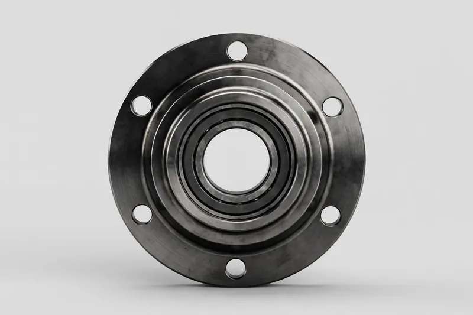
Cụm moay-ơ bánh xe
Cụm moay-ơ điều chỉnh sẵn, không cần bảo trì cho xe con và xe thương mại, có vòng phớt từ tính ABS khi cần.
Tìm hiểu thêm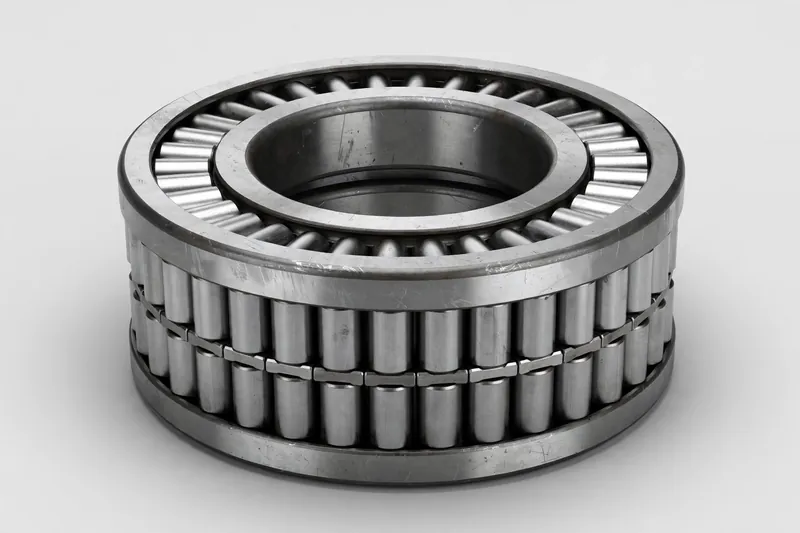
Vòng bi hộp trục đường sắt
Vòng bi hộp trục chịu tải nặng cho toa khách và toa hàng, trong kích thước tiêu chuẩn tới 600 mm đường kính ngoài.
Tìm hiểu thêm